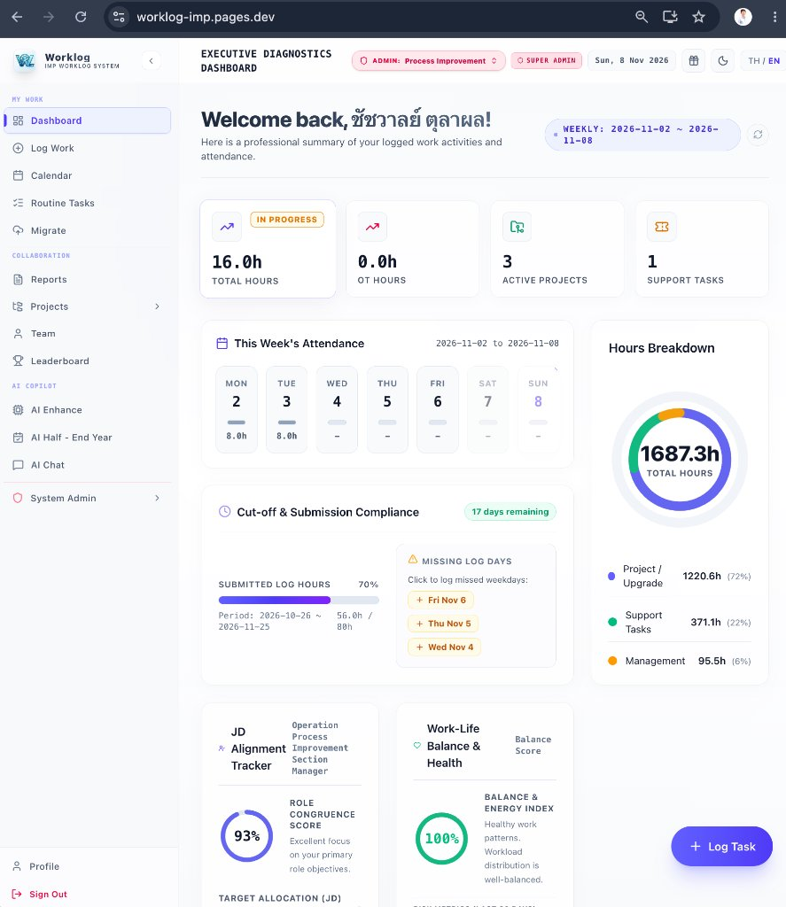
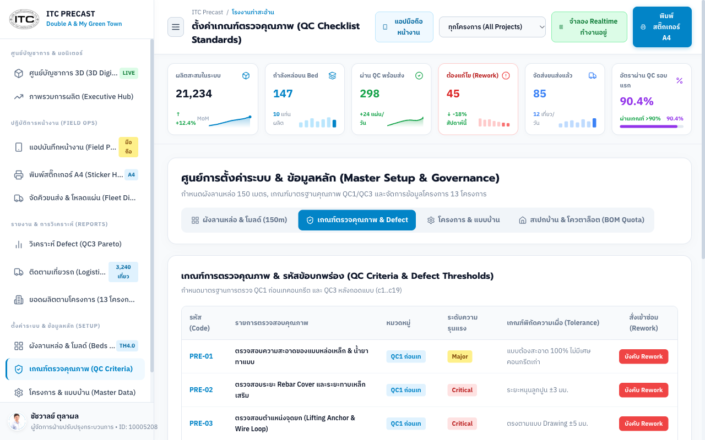
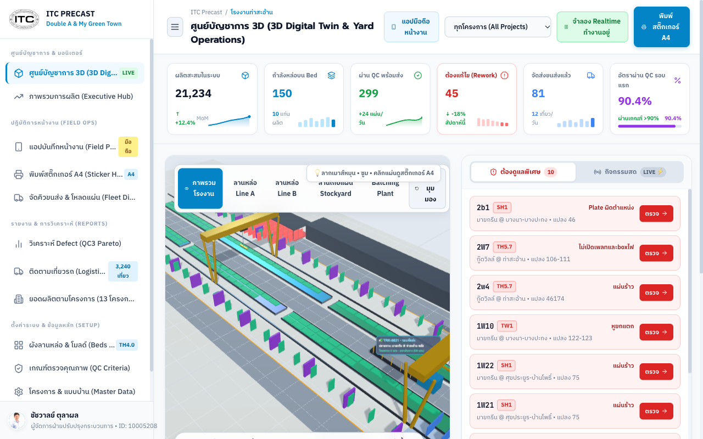
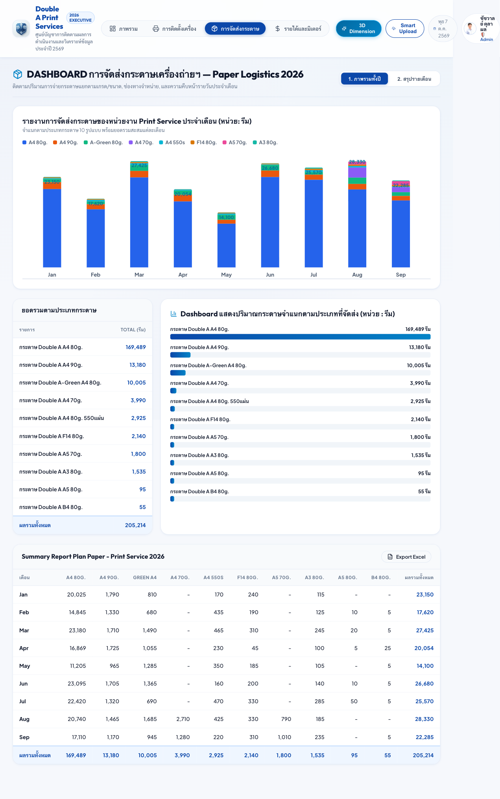
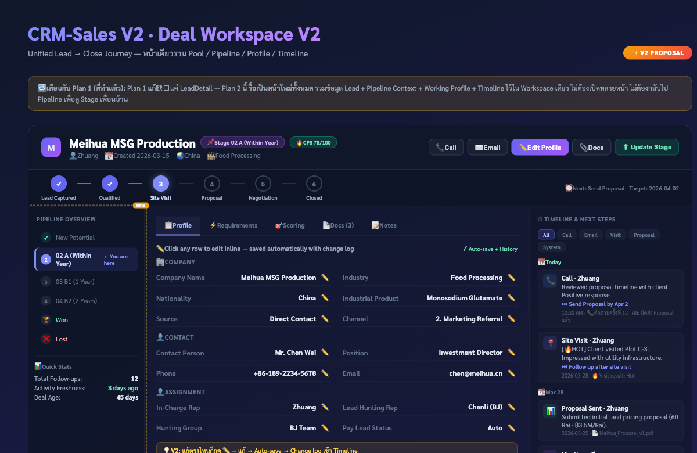

System Evidence
การขับเคลื่อนกระบวนการด้วยนวัตกรรมดิจิทัล, ปัญญาประดิษฐ์ (AI) และการพัฒนาบุคลากรอย่างยั่งยืน
"เราไม่ได้เป็นเพียงหัวหน้างานที่เก่งงานเทคนิคหรือคอยดับไฟเฉพาะหน้า (Firefighter) แต่เราคือ Strategic Process & People Leader ที่เข้าใจธุรกิจลึกซึ้ง นำ AI มาเร่งความเร็วในการออกแบบ ส่งมอบงานแบบแบ่ง Phase เพื่อให้เกิดคุณค่าทันที และโค้ชชิ่งทีมงานจนเติบโตอย่างมั่นคง"
ผลการดำเนินงานส่งมอบจริงเกินเป้าหมายทุกไตรมาส (100% เต็ม | Grade A) พร้อมหลักฐานเชิงประจักษ์
สถาปัตยกรรมการบริหารงานที่เปลี่ยนปัญหาซับซ้อนให้กลายเป็นโซลูชันที่ส่งมอบได้จริงและยั่งยืน
ประเมินผลอย่างเป็นกลางอิงหลักฐานจริงใน Google Calendar และ col_worklog 129 รายการ (63/66 วัน 95.5%)
| มิติการประเมิน (5 Dimensions) | เต็ม | ได้ | ระดับ | เหตุผลเชิงประจักษ์จาก AI |
|---|---|---|---|---|
| 1. Quantity (ความครบถ้วน) | 20 | 18.5 | 92.5% | บันทึกสม่ำเสมอ 95.5% รวม 129 รายการ ครอบคลุม JD ทั้ง 5 ด้าน และ 15 โครงการ |
| 2. Quality (คุณภาพและผลลัพธ์) | 20 | 16.5 | 82.5% | ส่งมอบฟังก์ชันสำคัญครบถ้วน เช่น Smart HR, CRM Ticket, Jawis QC Script |
| 3. Learning (การเรียนรู้) | 20 | 18.5 | 92.5% | Learn ➔ Apply ➔ Improve ➔ Share ผ่าน AI Workshop & ถ่ายทอดความรู้ 22 ครั้ง |
| 4. Accountability (ความรับผิดชอบ) | 20 | 16.5 | 82.5% | บทบาทหัวหน้างานชัดเจน: TeamOps, Delegate 7 ครั้ง, Coach 4 ครั้ง, Review 8 ครั้ง |
| 5. Proactiveness (การคิดเชิงรุก) | 20 | 18.0 | 90.0% | ริเริ่มระบบแบบประเมิน HR ลดต้นทุน, ดักจับรูปเบลอ, ออกแบบใบเบิก DDS ล่วงหน้า |
หลักฐานเชิงประจักษ์ด้าน Accountability และ Proactiveness ในการบริหารจัดการส่วนงาน
การนำคำแนะนำของ AI ในครึ่งปีแรก มาเป็นโจทย์ในการพัฒนาจนเกิดตัวเลข Business Impact และ Closure จริง
แก้ข้อสังเกต AI: พิสูจน์เวลาทำรายงานที่ลดได้จริงในปี 2026 พร้อมวางโมเดลผลประหยัดเงินสดเตรียม Rollout ปี 2027
แก้ข้อสังเกต AI: เปลี่ยนสถานะจาก Plan สู่การเซ็นรับมอบจริงร่วมกับ Process Owner

สอดรับกับ Process Improvement Methodology Policy (อนุมัติโดย คุณจินตนา ภูดิทธนภาคย์)
| ประเภทเอกสารตาม Policy | ลักษณะงานที่เหมาะสม | การนำไปใช้จริงในโครงการ |
|---|---|---|
| 1. Process / SOP | มาตรฐานกระบวนการระดับ End-to-End | SOP ขั้นตอนการรับสมัครงานและเชื่อมต่อฐานข้อมูล HRMS |
| 2. Work Instruction (WI) | งาน Routine ที่มีขั้นตอนทำซ้ำชัดเจน | WI 5.1 ขั้นตอนตรวจสอบความพร้อมก่อนเทคอนกรีตบนโต๊ะหล่อ |
| 3. Digital Checklist | จุดตรวจหน้างานที่ต้องคุมให้ครบถ้วน | Checklist QC1/QC3 บนแท็บเล็ต บังคับถ่ายภาพ 4 จุด |
| 4. Incident & RCA Record | บันทึก Root Cause และการป้องกันซ้ำ | บันทึก RCA รอยแตกลายงาแผ่นคอนกรีตจากสภาพอากาศหนาว |
| 5. Decision Log | บันทึกเหตุผลและทางเลือกในการตัดสินใจ | Decision Log การเลือกแท็กบาร์โค้ดเหล็กเสริมทนความร้อน 120°C |
การสังเคราะห์มุมมอง AI ต่อนโยบายการจัดการองค์ความรู้เพื่อการเติบโตที่ยั่งยืน
รวมศูนย์ข้อมูลกระจัดกระจายสู่ Executive Intelligence ช่วยทีมงานประหยัดเวลาทำข้อมูลสะสมกว่า 1,000+ ชม./ปี
การปฏิรูปสายการผลิตแผ่นคอนกรีตสำเร็จรูปด้วยแนวทาง Phased Execution และสถาปัตยกรรมดิจิทัล


ยกระดับจากการทำข้อมูล Excel ด้วยมือ สู่ Top-Down Executive Dashboard พร้อมวางโมเดลสู่ Phase Operations ปี 2027

การขับเคลื่อนศักยภาพของ คุณรณชัย วิจิตโต (ใหม่) สู่บทบาท Project Lead Process Improvement
"การเลื่อนตำแหน่งไม่ใช่แค่การทำงานของตัวเองให้สำเร็จ แต่คือการสร้างคนให้สามารถเป็นผู้นำโครงการและตัดสินใจแทนเราได้ วันนี้น้องใหม่ก้าวขึ้นมาเป็น Project Lead Process Improvement คุมโครงการสำคัญอย่าง 304IP CRM Sales, Juristic บริหารค่าส่วนกลาง, Commercial & Residential บริหารงานซ่อมและ Inventory ได้อย่างเต็มภาคภูมิ ทำให้ผมสามารถขยับไปโฟกัสงานระดับยุทธศาสตร์ของสายงานได้อย่างมั่นใจครับ"

การขยายขนาดผลงานสู่ระดับสายงาน (Department-Wide Scaling) เพื่อสร้างความได้เปรียบแก่องค์กร
พร้อมขับเคลื่อนเป้าหมายองค์กรด้วยประสบการณ์ ความมุ่งมั่น และภาวะผู้นำที่พิสูจน์ได้
"ขอขอบพระคุณคณะกรรมการพิจารณาปรับตำแหน่ง และคุณจินตนาสำหรับคำแนะนำและการสนับสนุนตลอดมา
ผมมีความพร้อมเต็มที่ทั้งด้านวุฒิภาวะ ประสบการณ์
และพลังขับเคลื่อนที่จะนำพาหน่วยงานสร้างคุณค่าที่ยิ่งใหญ่ขึ้นให้แก่องค์กรครับ"